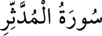

74- el-MÜDDESSİR SÛRESİ
Mekke’de nâzil olmuştur; 56 âyettir. Sûre, adını ilk âyetindeki «el-müddessir»
kelimesinden almıştır. «Müddessir», örtüsüne bürünen, sarınan demektir.
Hz. Peygamber’e hitâb eden ilk âyet, Müzzemmil sûresinden önce nâzil olmuştur.
Müzzemmil sûresinin 1. âyetindeki açıklamaya bakınız.